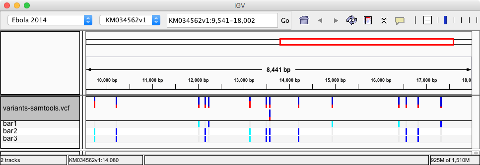

When viewed in IGV it produces the output
 {% markdown %} ### Poor man's snp caller A "poor man's snp caller" is a simple "toy" SNP caller that can be used to distinguish "easy" to call SNPs from difficult to predict ones. There are millions of variations that one could detect by parsing the mipileup output. The purpose of the poor man's SNP caller is to separate SNPS into triviailly easy and difficult ones. Then evaluate other SNP callers on their ability to work out the difficult problems. Place this code into `poor_man_snp.awk` {% simplecode "poor_man_snp.awk" %} Run the snp caller as so: ``` samtools mpileup -f $REF experiment.bam | tr -d '$^],.' | awk -f poor_man_snp.awk > snps.bed ``` {% endmarkdown %} {% endblock %}